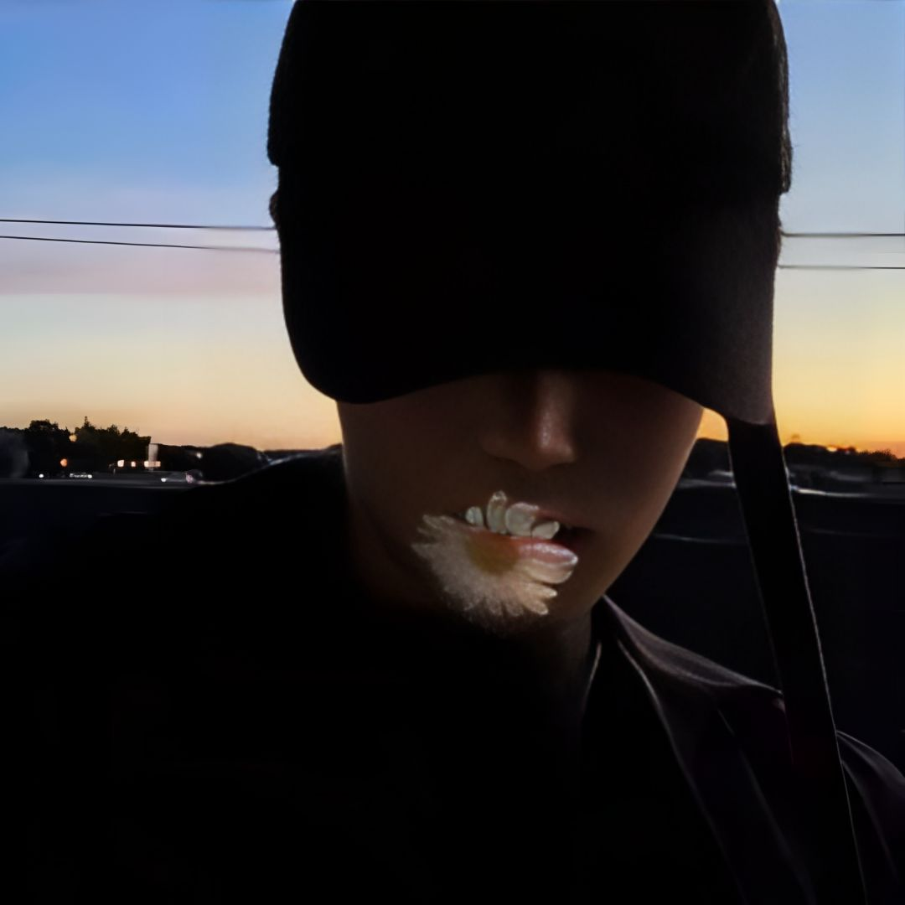

"盛夏 蝉鸣 与你"
[00:00.00] 作词 : 古小力 [00:01.00] 作曲 : 周杰伦 [00:25.70]春雨后 太阳缓缓的露出笑容 [00:28.45]你的微笑 就像弯弯的彩虹 [00:30.95]在这片天空 云朵就是我 [00:33.45]随时随地环绕在你四周 [00:35.95]河堤上的风筝拉长自由 [00:38.69]微风慢慢吹着 幸福感动 [00:41.20]我想紧紧握 紧紧牵你的手 [00:43.95]浪漫的抱着你 看着日落 [00:46.45]怕黑时候 数着指头 [00:48.94]时间就会很快过 [00:51.45]我会小心呵护守候 [00:53.95]下雨有我肩膀靠 [00:56.45]睡不着记得想着我 [00:59.20]三秒后会梦见我 [01:01.69]载着气球 陪你兜风 [01:04.20]看遍所有会笑的星空 [01:08.20]整个夏天 想和你环游世界 [01:13.20]山路蜿蜒 就像是爱的冒险 [01:18.20]你的笑脸 是我唯一的零嘴 [01:23.45]我用双眼捕捉这特写 [01:28.45]整个夏天 融化了整个季节 [01:33.70]一天一天 把你定格在结尾 [01:38.70]让我了解 爱原来可以那么简单点缀 [01:47.45]看窗外的蓝天 在这个屋檐 [01:50.20]我回忆画面有你情节 [02:12.94]河堤上的风筝拉长自由 [02:15.70]微风慢慢吹着 幸福感动 [02:18.20]我想紧紧握 紧紧牵你的手 [02:20.95]浪漫的抱着你 看着日落 [02:23.45]怕黑时候 数着指头 [02:25.95]时间就会很快过 [02:28.45]我会小心呵护守候 [02:30.95]下雨有我肩膀靠 [02:33.70]睡不着记得想着我 [02:36.20]三秒后会梦见我 [02:38.70]载着气球 陪你兜风 [02:41.20]看遍所有会笑的星空 [02:45.20]整个夏天 想和你环游世界 [02:50.20]山路蜿蜒 就像是爱的冒险 [02:55.45]你的笑脸 是我唯一的零嘴 [03:00.46]我用双眼捕捉这特写 [03:05.44]整个夏天 融化了整个季节 [03:10.70]一天一天 把你定格在结尾 [03:15.70]让我了解 爱原来可以那么简单点缀 [03:24.45]看窗外的蓝天 在这个屋檐 [03:31.45]我回忆画面有你情节
“总有些惊奇的际遇 比方说当我遇见你”
遇到你的那一刻，我才知道什麼是淪陷。


喜欢那种吃过饭后，漫无目的的散步，碰到路边的小摊，也忍不住买上一点，走在夜晚的马路牙子，吹着晚风.